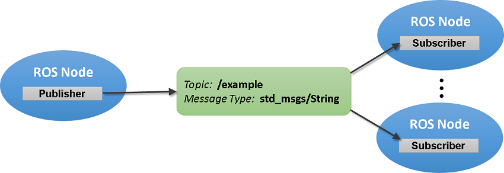
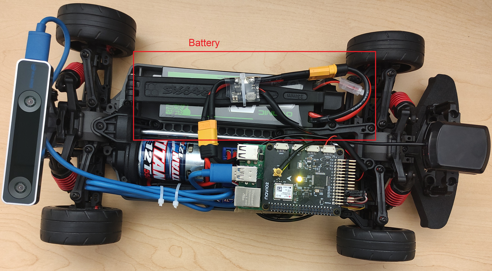

Secure Autonomous Systems
Instructor: Prof. Sibin Mohan, The George Washington University
CSCI 6907/3907 | Fall 2022 | TR 12:45PM - 02:00PM PT | SMTH 115
MP IV-A: Rover Setup
Administrivia
| Announcement Date |
Nov. 7, 2022 |
| Submission Date |
- |
| Submission Time |
- |
| Total Points |
0 |
Objective
In this MP, we want to learn how a rover works.
The following objectives are designed to help you familiarize yourself with some basic parts:
-
What is ROS, and how are we using it?
-
How to ssh to a system
-
How to run and control the rover.
Run ROS on Rover
What is ROS
ROS is an open-source, meta-operating system for your robot. It provides the services you would expect from an
operating system, including hardware abstraction, low-level device control,
implementation of commonly-used functionality, message-passing between processes, and package management.
It also provides tools and libraries for obtaining, building, writing, and running code across multiple computers.
ROS core and communication
With ROS, you can easily separate your code base into packages containing small programs called nodes.
To make those programs communicate between each other, ROS comes with three main communication tools:
- Topics:
Those will be used mainly for sending data streams between nodes.
- Services:
They will allow you to create a simple synchronous client/server communication between nodes.
- Action:
They will provide you with an asynchronous client/server architecture, where the client can send a request that takes a long time.
The client can asynchronously monitor the server's state and cancel the request anytime.
ROS data exchange
The primary mechanism for ROS nodes to exchange data is sending and receiving messages. Messages are transmitted on a topic, and each topic has a unique name in the ROS network.
If a node wants to share information, it uses a publisher to send data to a topic. A node that wants to receive that information uses a subscriber to that same topic.
Besides its unique name, each topic also has a message type, which determines the types of messages that are capable of being transmitted under that topic.
This publisher and subscriber communication have the following characteristics:
- Topics are used for many-to-many communication. Many publishers can send messages to the same topic and many subscribers can receive them.
- Publishers and subscribers are decoupled through topics and can be created and destroyed in any order. A message can be published to a topic even if there are no active subscribers.

Startup the Rover
- Each rover has 2 batteies. make sure the rover batteries are fully charged
- Turn on the radio controller
-
Put one of the charged batteries in the correct position, as shown in the picture, and plug it into the rover

- Reconnect the sensor by plugging out and plugging it in again and turn on Rover ESC (Electronic Speed Controller)
by pushing the button shown in the picture one time (Don't hold the button for too long)
- Connect your computer to the same network as the rover. The SSID is
slabrouter, and the password is
RoyalFlush
-
According to the number of the rover you got, you can find its IP address here.
| 1 |
192.168.0.223 |
| 2 |
192.168.0.139 |
| 3 |
192.168.0.205 |
| 4 |
192.168.0.142 |
| 5 |
192.168.0.193 |
-
Open a terminal on your computer and make an ssh connection to the rover by typing
ssh pi@rover-ip
and put raspberry for the login password
-
We need to run several scripts through this shell, so one way of doing that is to lunch several shells by screen
First, write this command to create a new shell
screen -S ros_launch
In the new shell, execute the rovers launch files
roslauch gwurover simple_control.launch
- Detach the shell and go back to the first shell by pressing this sequence of keys
Ctrl+aand
d
- You should be able to control the rover with the radio control by just moving the right stick
Caution
-
ALWAYS TURN THE ROVER OFF FIRST. Before turning the radio controller off, please turn off the rover first.
If you don't do that, the rover will go full throttle and won't stop.
- Check the battery every 10 minutes with the battery checker. Please charge the battery if the battery is lower than 20 percent.
This is how to use battery checker and battery charger.
- When you are done, please put the batteries on storage mode
Run automated mission on Rover
- Got back to the shell that you ran the launch file by typing
screen -r launch
- Cancle the current running script with pressing ctr+c
- Put the robot on the left-down corner of the space specified for the rover
That position is the (0,0) position for the rover.
- Run this command
roslaunch gwurover simple_pid.launch
- On the radio controller pull the SG key(Red) up and after that pull the SF key(Green) up to start the
mission.

- The rover should follow a 2mx2m rectangule
Submission Instructions
-
No submission is needed! Show the result to the TA at the time of your booking to work with the rover.